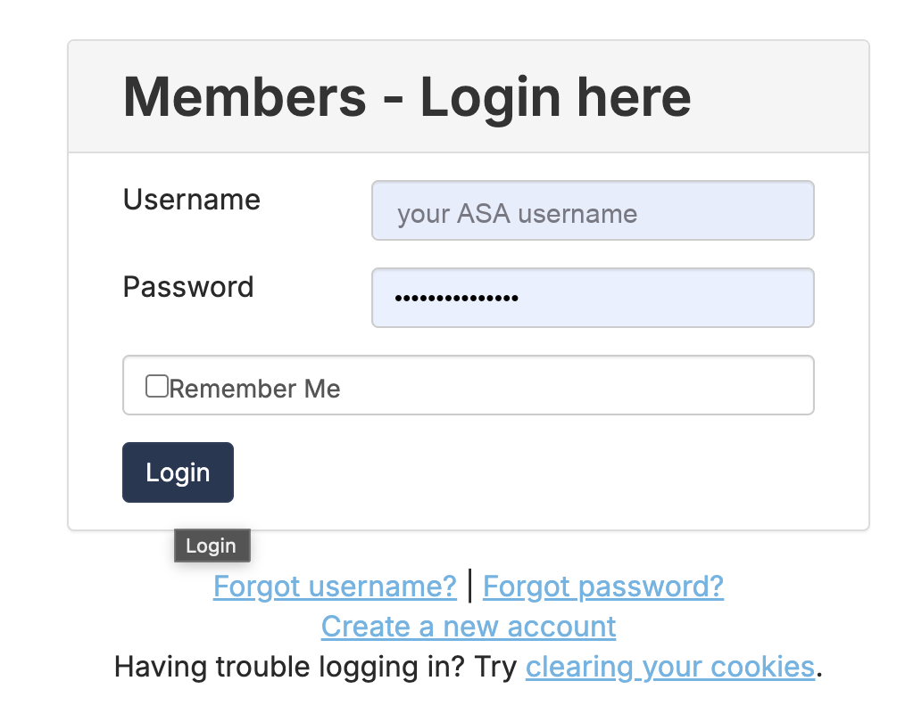
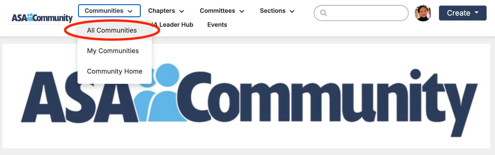
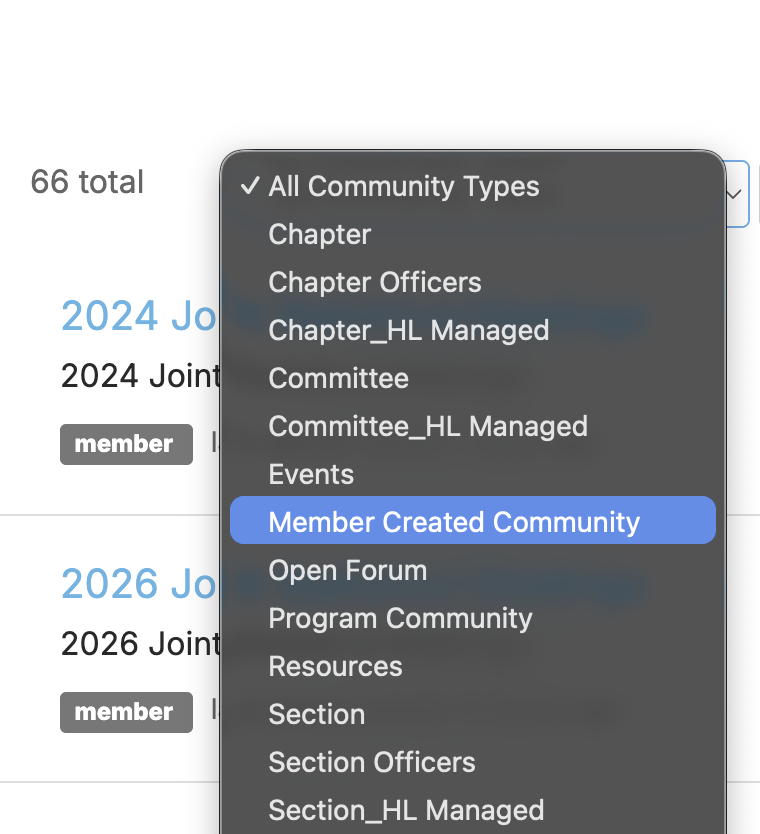
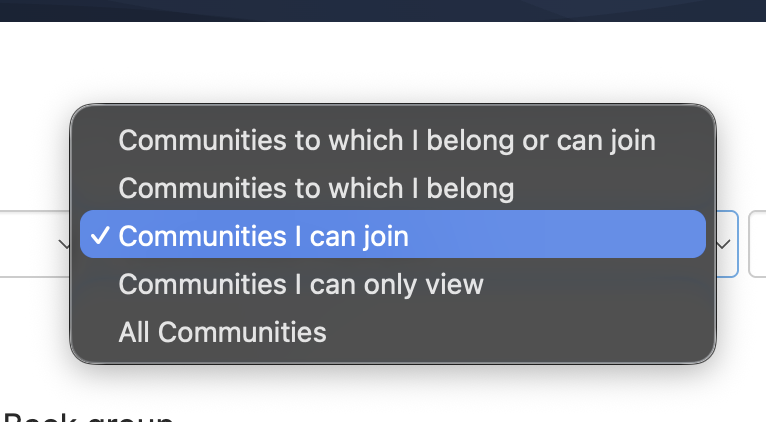
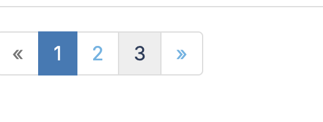
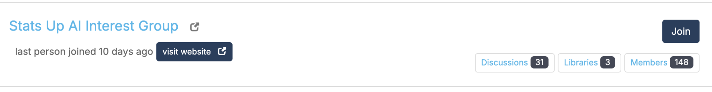
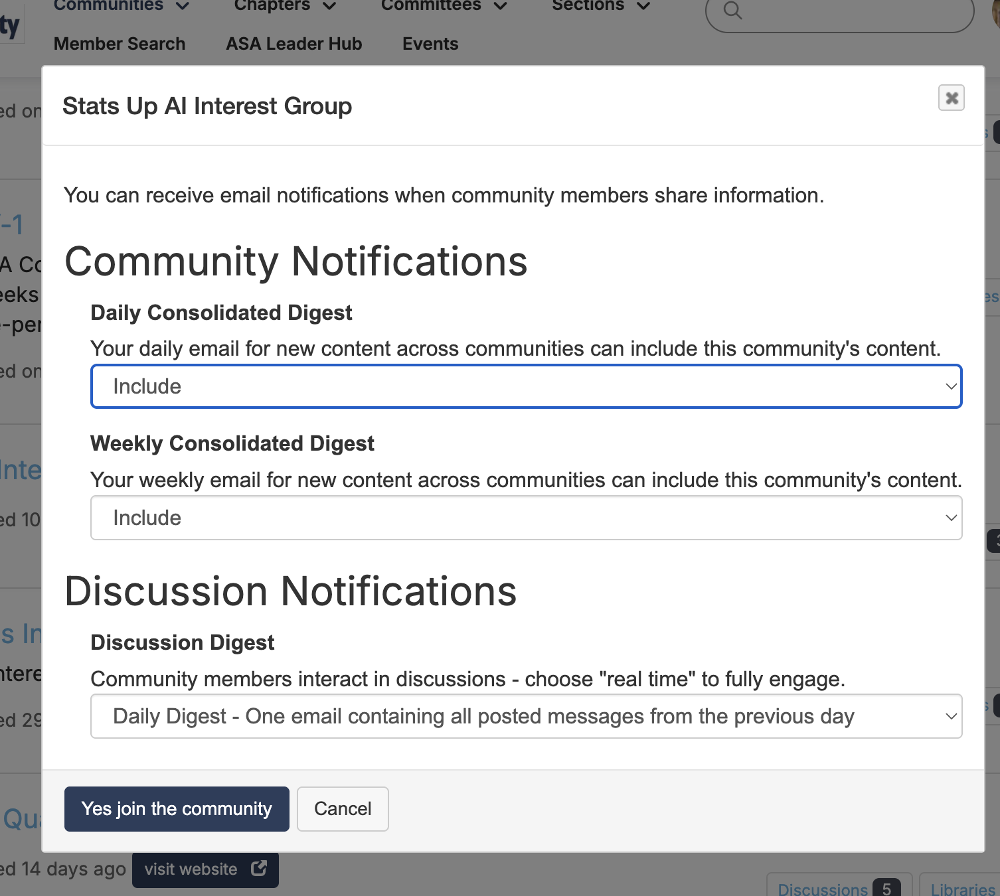
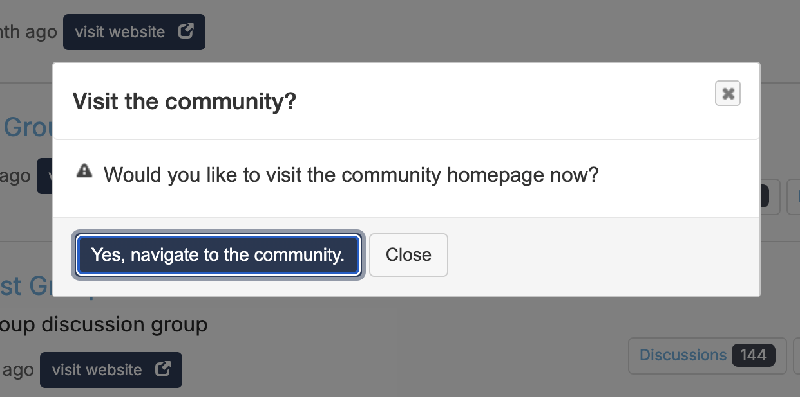

Joining our Interest Group inside the ASA Community takes a few clicks that are easy to miss. This visual guide walks you through all 8 steps — screenshot by screenshot.
You'll need an ASA account (membership). Our group is found by filtering the community list — it lives on the last page of the "Member Created Community" filter (Steps 4–6).
Not an ASA member? You can still join our Google Groups mailing list for free. Tip: click any screenshot to enlarge it.
Use the username and password from your ASA membership account.

In the top menu, click Communities and choose All Communities.

In the filters, select “Member Created Community”, then set the second filter to “Communities I can join.”


Scroll to the bottom of the list and click the highest page number — our group is near the end.

Find Stats Up AI Interest Group in the list and click the Join button.

Set your communication preferences (daily/weekly digests) and click “Yes, join the community.”

Confirm to visit the community homepage, introduce yourself, and start connecting with statisticians shaping the future of AI.

Open the ASA Community and follow the steps above, or use our free mailing list.
Help organize events, webinars, and community initiatives — sign up as a volunteer.
We are an Interest Group of ASA | Non-ASA members can join our Google Groups mailing list | Organization (Charter)